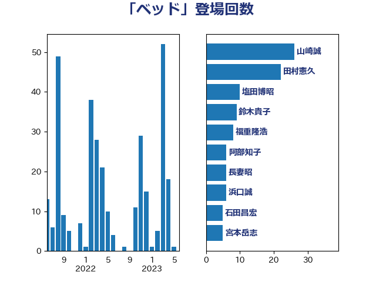

単語「ベッド」

| 田村憲久 | 自由民主党 | 96 回 |
| 長妻昭 | 立憲民主党 | 41 回 |
| 田村智子 | 日本共産党 | 15 回 |
| 高橋千鶴子 | 日本共産党 | 13 回 |
| 塩田博昭 | 公明党 | 10 回 |
| 山崎誠 | 立憲民主党 | 10 回 |
| 本村伸子 | 日本共産党 | 9 回 |
| 美延映夫 | 日本維新の会 | 9 回 |
| 菅義偉 | 自由民主党 | 9 回 |
| 福重隆浩 | 公明党 | 8 回 |
| 梅村聡 | 日本維新の会 | 7 回 |
| 西村康稔 | 自由民主党 | 7 回 |
| 高木啓 | 自由民主党 | 7 回 |
| 後藤祐一 | 立憲民主党 | 6 回 |
| 浜口誠 | 国民民主党 | 6 回 |
| 吉田はるみ | 立憲民主党 | 5 回 |
| 大島敦 | 立憲民主党 | 5 回 |
| 宮本岳志 | 日本共産党 | 5 回 |
| 山井和則 | 立憲民主党 | 5 回 |
| 後藤茂之 | 自由民主党 | 5 回 |
| 柳ヶ瀬裕文 | 日本維新の会 | 5 回 |
| 赤羽一嘉 | 公明党 | 5 回 |
| 倉林明子 | 日本共産党 | 4 回 |
| 東徹 | 日本維新の会 | 4 回 |
| 江田憲司 | 立憲民主党 | 4 回 |
| 田島麻衣子 | 立憲民主党 | 4 回 |
| 石田昌宏 | 自由民主党 | 4 回 |
| 逢坂誠二 | 立憲民主党 | 4 回 |
| 串田誠一 | 日本維新の会 | 3 回 |
| 塩川鉄也 | 日本共産党 | 3 回 |
| 大西健介 | 立憲民主党 | 3 回 |
| 小西洋之 | 立憲民主党 | 3 回 |
| 岡本あき子 | 立憲民主党 | 3 回 |
| 志位和夫 | 日本共産党 | 3 回 |
| 柴田巧 | 日本維新の会 | 3 回 |
| 浜地雅一 | 公明党 | 3 回 |
| 清水貴之 | 日本維新の会 | 3 回 |
| 田村貴昭 | 日本共産党 | 3 回 |
| 羽生田俊 | 自由民主党 | 3 回 |
| 蓮舫 | 立憲民主党 | 3 回 |
| 上田清司 | 国民民主党 | 2 回 |
| 中島克仁 | 立憲民主党 | 2 回 |
| 丸川珠代 | 自由民主党 | 2 回 |
| 古賀之士 | 立憲民主党 | 2 回 |
| 國重徹 | 公明党 | 2 回 |
| 宮本徹 | 日本共産党 | 2 回 |
| 小川淳也 | 立憲民主党 | 2 回 |
| 小沼巧 | 立憲民主党 | 2 回 |
| 山添拓 | 日本共産党 | 2 回 |
| 山田勝彦 | 立憲民主党 | 2 回 |
| 枝野幸男 | 立憲民主党 | 2 回 |
| 柚木道義 | 立憲民主党 | 2 回 |
| 浅田均 | 日本維新の会 | 2 回 |
| 石井章 | 日本維新の会 | 2 回 |
| 福島みずほ | 社会民主党 | 2 回 |
| 高木かおり | 日本維新の会 | 2 回 |
| 井坂信彦 | 立憲民主党 | 1 回 |
| 伊藤孝恵 | 国民民主党 | 1 回 |
| 伊藤岳 | 日本共産党 | 1 回 |
| 古川禎久 | 自由民主党 | 1 回 |
| 吉川元 | 立憲民主党 | 1 回 |
| 吉田統彦 | 立憲民主党 | 1 回 |
| 城井崇 | 立憲民主党 | 1 回 |
| 塩崎彰久 | 自由民主党 | 1 回 |
| 大口善徳 | 公明党 | 1 回 |
| 小林鷹之 | 自由民主党 | 1 回 |
| 山際大志郎 | 自由民主党 | 1 回 |
| 岸信夫 | 自由民主党 | 1 回 |
| 岸真紀子 | 立憲民主党 | 1 回 |
| 川田龍平 | 立憲民主党 | 1 回 |
| 平山佐知子 | 無所属 | 1 回 |
| 末松信介 | 自由民主党 | 1 回 |
| 森田俊和 | 立憲民主党 | 1 回 |
| 比嘉奈津美 | 自由民主党 | 1 回 |
| 水岡俊一 | 立憲民主党 | 1 回 |
| 河野義博 | 公明党 | 1 回 |
| 浅野哲 | 国民民主党 | 1 回 |
| 玉木雄一郎 | 国民民主党 | 1 回 |
| 福山哲郎 | 立憲民主党 | 1 回 |
| 芳賀道也 | 国民民主党 | 1 回 |
| 藤木眞也 | 自由民主党 | 1 回 |
| 西田実仁 | 公明党 | 1 回 |
| 赤澤亮正 | 自由民主党 | 1 回 |
| 重徳和彦 | 立憲民主党 | 1 回 |
| 野中厚 | 自由民主党 | 1 回 |
| 階猛 | 立憲民主党 | 1 回 |
| 音喜多駿 | 日本維新の会 | 1 回 |
| 馬場伸幸 | 日本維新の会 | 1 回 |
| 高階恵美子 | 自由民主党 | 1 回 |